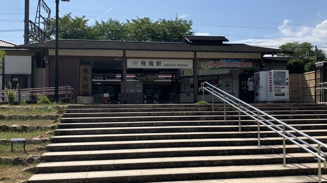
A近鉄飛鳥駅
古墳や寺院、里山を巡るコースの出発地点です。
START明日香村が思い出に残るよう、歩く道にこだわって作成しました。徒歩・半日、徒歩・1日、サイクリング・1日、ドライブコースの4つをご紹介します。目的や滞在時間、移動手段に合わせてお選びください。
飛鳥駅を出発し、岩屋山古墳や猿石、鬼の俎・鬼の雪隠などの史跡を訪ね、高松塚古墳と高松塚壁画館を見学。最後にあすか夢販売所でお土産探しも楽しめる半日散策です。見学時間は合計約1時間40分、移動時間は約52分、全体の所要時間は約2時間32分が目安です。※トイレが飛鳥駅周辺と高松塚古墳周辺にしかないので注意してください。
飛鳥駅を出発し、古墳や石造物、寺院、展示施設、甘樫丘を巡って飛鳥駅へ戻る1日コースです。見学時間は合計約4時間10分、移動時間は約2時間42分で、全体の所要時間は約6時間52分が目安です。昼食・休憩時間は別に見込んでください。
古墳や寺院、里山を巡る一日の出発地点です。
START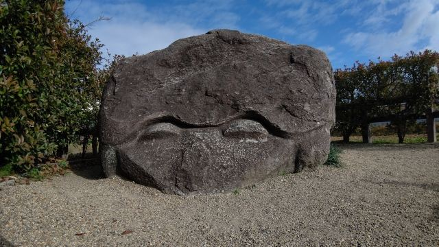
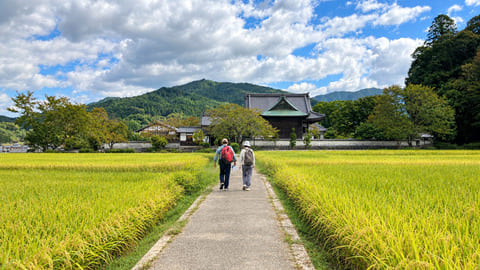
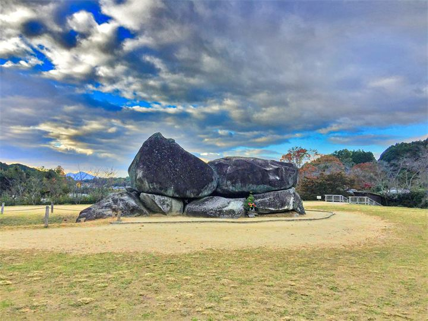
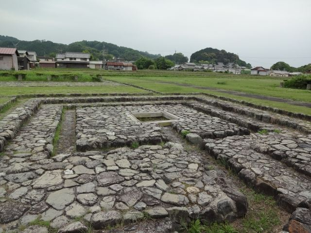
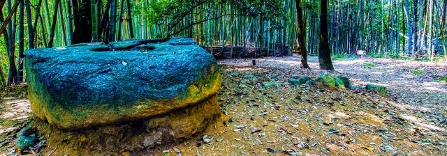
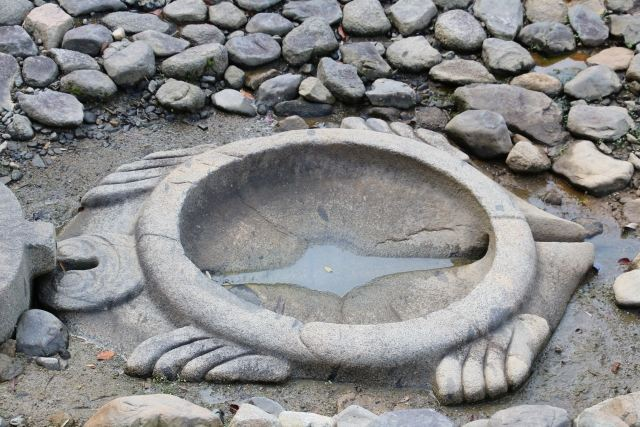
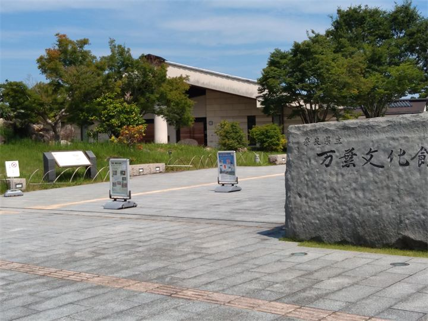
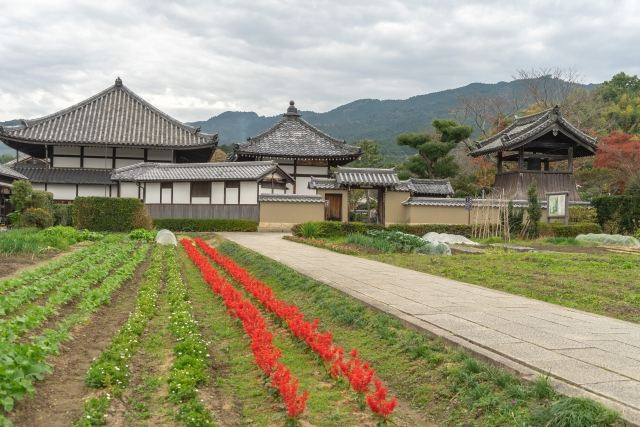
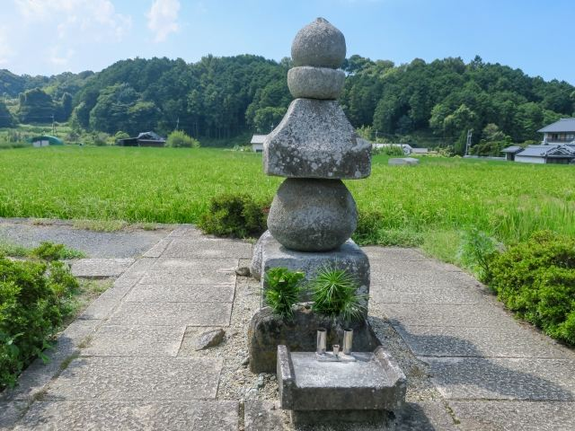

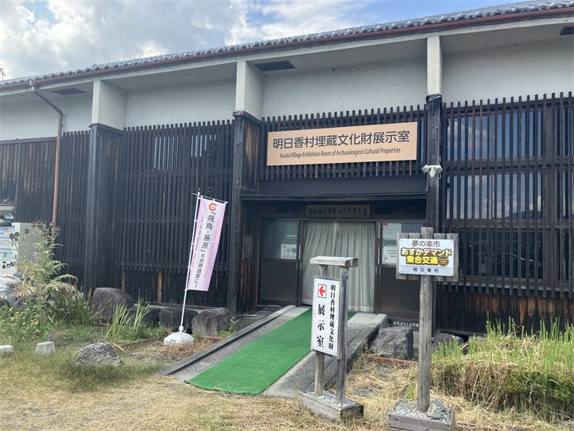

自転車で飛鳥駅を出発し、岩屋山・牽牛子塚・キトラ・高松塚の古墳から、石舞台や飛鳥宮跡、寺院、石造物、博物館まで明日香村の見どころを幅広く巡るロングコースです。26か所の見学時間は合計約6時間45分、移動時間は約1時間53分で、全体の所要時間は約8時間38分が目安です。多くのスポットを詰め込んだコースなので、見学に時間がかかる博物館などを省くなどして、時間に合わせて調整してください。
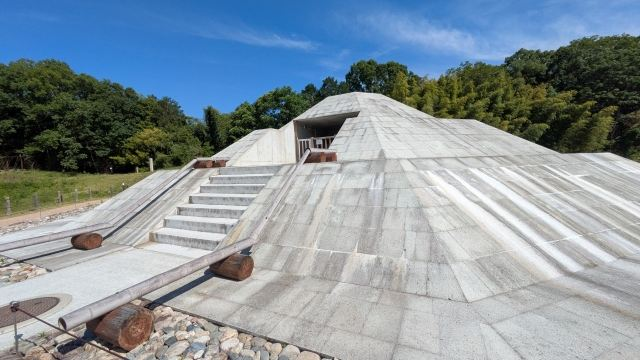
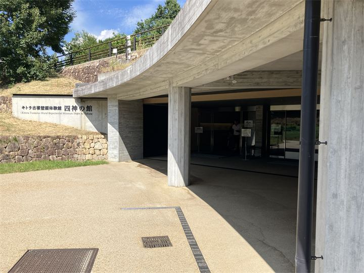
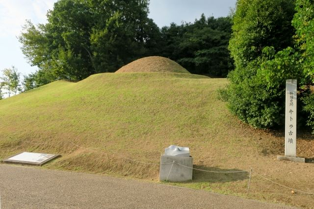
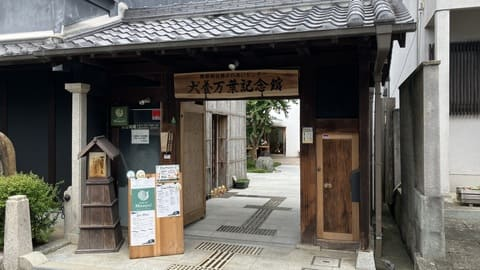


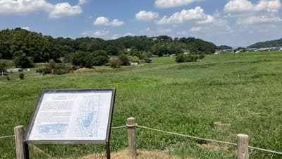
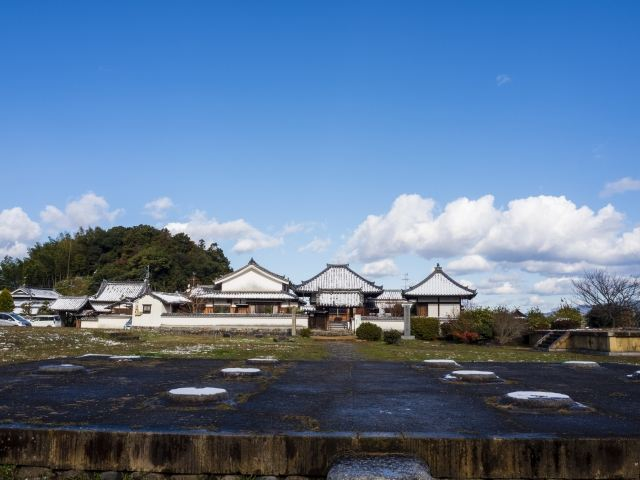
飛鳥駅前や、亀石・石舞台の近くで借りられる店舗を掲載します。料金・営業時間・車種は各店舗へ事前にご確認ください。
明日香村の観光スポットを車で巡る自由周遊型のモデルコースです。掲載8か所の見学時間は合計約2時間45分が目安です。スポット間の移動は最も遠い場所でも車で10分程度なので、ランチの場所や駐車場の混雑状況を考慮し、訪問先を組み合わせてください。
車で通行しやすい主要道路を中心に、明日香村のドライブメインルートを表示しています。各観光スポットへの移動や、立ち寄る場所を組み合わせる際の参考にしてください。実際の通行時は、現地の道路標識や交通規制に従ってください。
無料駐車場は、それぞれの施設・公園・店舗を利用する方のための駐車場です。駐車したまま、ほかの観光スポットへ移動して周遊する目的での利用はご遠慮ください。
複数の観光スポットを巡る場合は、周辺散策に利用できる有料駐車場をご利用ください。無料駐車場は収容台数が限られ、季節やイベント等で利用条件が変更される場合があります。現地の案内表示を優先してください。
無料駐車場は、下記の施設・公園等を利用する場合にご利用ください。高松塚周辺地区第1駐車場は利用休止中で、第2駐車場は利用できます。石舞台地区駐車場は2026年11月15日まで二輪車専用です。飛鳥寺駐車場は、拝観者に限り30分無料で利用できます。
| 対象施設・エリア | 駐車場 | 収容台数 | 利用条件・注意点 |
|---|---|---|---|
| 牽牛子塚古墳 | 1アグリステーション飛鳥 駐車場 | 20台 | 牽牛子塚古墳の見学向け。 |
| 牽牛子塚古墳 | 2牽牛子塚古墳 臨時駐車場 | 普通車10台 | 地元の方が提供する臨時駐車場。現地の案内に従ってください。 |
| キトラ古墳・四神の館 | 4キトラ古墳周辺地区 第1駐車場 | 普通車29台・身障者用2台・大型車3台 | 国営飛鳥歴史公園利用者向け。大型バスは事前予約が必要です。 |
| 檜前寺跡周辺 | 5キトラ古墳周辺地区 第2駐車場 | 普通車40台・身障者用2台 | 国営飛鳥歴史公園利用者向け。檜前寺跡が近くにあります。 |
| 高松塚・高松塚壁画館 | 7高松塚周辺地区第2駐車場 | 普通車15台 | 国営飛鳥歴史公園利用者向け。第1駐車場は2026年9月1日から利用休止中です。 |
| 欽明天皇陵・吉備姫王墓（猿石） | 8欽明天皇陵駐車場 | 普通車2台 | 陵墓参拝者向け。入口の柵が狭いため、車幅に注意。 |
| 天武・持統天皇陵 | 9天武・持統天皇陵駐車場 | 普通車5台 | 天武・持統天皇陵の参拝者向け。 |
| 橘寺 | 10橘寺参拝者駐車場 | 普通車15台 | 橘寺参拝者向け。 |
| 橘寺 | 11橘寺東駐車場 | 普通車5台 | 橘寺参拝者向け。 |
| 犬養万葉記念館 | 12犬養万葉記念館駐車場 | 普通車5台 | 記念館・館内カフェ利用者向け。 |
| 岡寺 | 13岡寺無料駐車場 | 台数未確認 | 岡寺参拝者向け。駐車場までの参道が非常に狭いため注意。 |
| 石舞台地区 | 14石舞台地区駐車場 | 普通車14台・身障者用2台 | 2026年9月19日〜11月15日は二輪車専用。期間中、普通車は利用できません。 |
| 奥明日香 天空展望台 | 15入谷地区駐車スペース | 普通車7台 | 天空展望台を訪れる方向けに地元の方が提供する駐車スペース。 |
| 飛鳥坐神社 | 16飛鳥坐神社 参拝者専用駐車場 | 普通車10台 | 飛鳥坐神社の参拝者専用。 |
| 飛鳥歴史公園甘樫丘地区 | 18甘樫丘地区川原駐車場 | 普通車29台・身障者用2台 | 国営飛鳥歴史公園利用者向け。トイレあり。 |
| 飛鳥資料館 | 19飛鳥資料館駐車場 | 普通車10台 | 飛鳥資料館利用者向け。トイレあり。 |
| 飛鳥寺 | 9飛鳥寺駐車場 | 普通車20台 | 通常料金は普通車500円。飛鳥寺の拝観者は30分無料で利用できます。 |
※駐車台数・利用条件は変更される場合があります。出発前に駐車場案内ページと現地の案内をご確認ください。
| 周辺の観光エリア | 駐車場 | 料金 | 収容台数 | 利用の目安・注意点 |
|---|---|---|---|---|
| 高松塚古墳 | 1高松塚駐車場 | 普通車500円 | 普通車60台 | 8:30〜17:00。公園の無料駐車場第1が休止中のため、こちらも候補になります。 |
| 高松塚古墳 | 2古墳前駐車場 | 普通車100円 | 普通車5台 | 入口までの道が狭い。大型車・車幅の大きい車は避け、徒歩ルートも確認。 |
| 高松塚古墳 | 3高松塚古墳東駐車場 | 普通車100円 | 普通車7台 | 高松塚古墳に近い小規模駐車場。 |
| 猿石・天武・持統天皇陵 | 4野口駐車場 | 普通車500円 | 普通車100台・大型車20台 | 9:00〜17:00。猿石や天武・持統天皇陵周辺の散策に便利。トイレ・レンタサイクルあり。 |
| 川原寺・亀石・飛鳥宮跡 | 5堂の前駐車場 | 普通車500円 | 普通車30台 | 川原寺の隣。亀石・飛鳥宮跡など周辺散策の拠点に便利。売店・公衆トイレあり。 |
| 岡寺 | 6岡寺門前駐車場 | 普通車500円 | 普通車70台・大型車7台 | 8:30〜17:00（冬季16:30まで）。広い道路沿い。 |
| 石舞台古墳 | 7石舞台駐車場 | 普通車500円 | 普通車60台・大型車10台 | 2026年9月19日〜11月15日は普通車の臨時料金。平日1,000円／回、土日祝2,000円／日・予約制。期間外の料金は公式案内で要確認。 |
| 万葉文化館・亀形石造物・酒船石・飛鳥寺・飛鳥宮跡周辺 | 8万葉文化館駐車場 | 普通車500円 | 普通車107台・大型車7台 | 9:00〜18:00。文化館、周辺の史跡や寺院を歩いて巡る拠点に便利。 |
| 飛鳥寺 | 9飛鳥寺駐車場 | 普通車500円 | 普通車20台 | 飛鳥寺の拝観者は30分無料。 |
※石舞台駐車場は2026年9月19日〜11月15日の期間、普通車の料金・予約条件が通常時と異なります。11月15日以降の料金は、出発前に公式案内をご確認ください。
明日香村内は、ほとんどの店舗に専用駐車場があります。駐車場の場所や利用条件は、各店舗の公式ページをご確認ください。
専用駐車場がない店舗